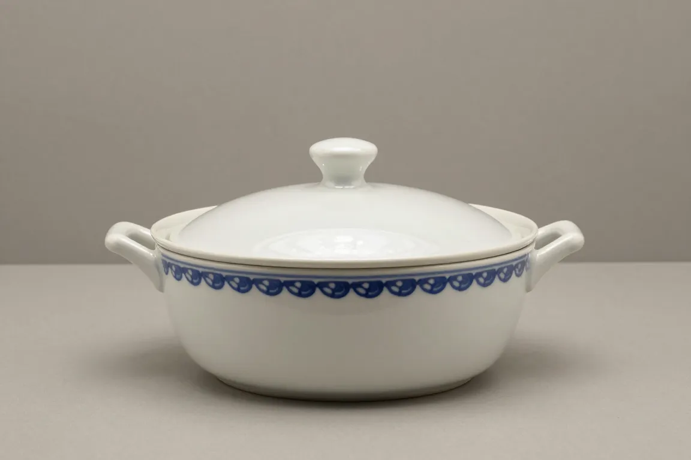

керамика · 1958–1990 · также: Corning Ware, Посуда из пирокерама, Посуда из морозилки в духовку
Посуда для духовки и огня из белой стеклокерамики, стекла, кристаллизованного нагревом. Черепок переносит газовое пламя и морозилку, а синяя декаль «василёк» отмечает ранний ассортимент.

Главная идея
Повару нужна одна кастрюля, идущая из морозилки на огонь и на стол, поэтому черепок — это стекло, которое жар превращает в мелкокристаллическую керамику.
Принципы дизайна
Варите литий-алюмосиликатное стекло с зародышеобразователем и формуйте его как стекло при примерно 1500 °C.
Нагревайте сформованное стекло до 750–1100 °C вторым этапом, называемым керамизацией, чтобы в нём выросли мелкие кристаллы.
Оставляйте поверхность гладкой, глянцевой и белой; отдельной глазури не добавляйте.
Берите стенку 3–6 мм; держите толщину ровной, чтобы тепло распределялось.
Печатайте на боку синий василёк декалью при низком обжиге.
Ставьте пластмассовую ручку или стеклянную крышку с бортом, сидящим в стенке.
Делайте формы простыми и круглыми: жаровня, кастрюля, сковорода и форма для запекания.